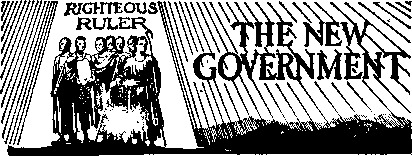
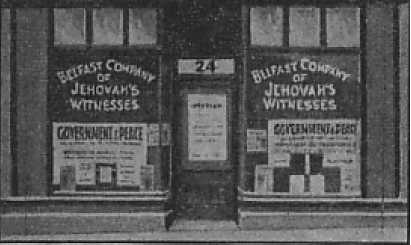
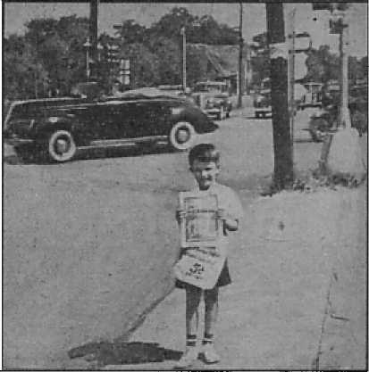
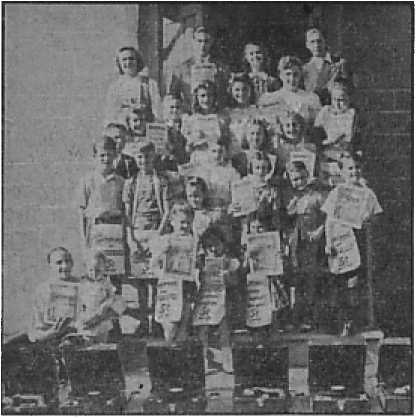
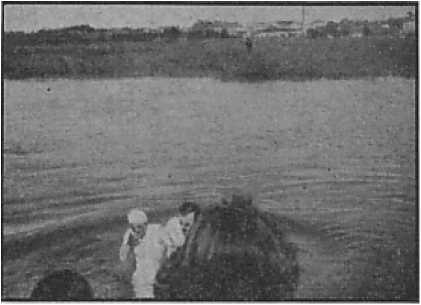

■ -'a journal of fact, hope and courage
X
Respect to the Flag
The Act of the 77th Congress solves a difficulty
Useless Police at Reedley
The Author and The Book
The proof of its inspiration
The Bible vs. Tradition
Concordances "Anglo-Israelite” Theory
“Dublin” views it in the light of reason
One Dollar a Year Vol. XXIV No. 602 * $1.25 In Canada and Published Every
Five Cents a Copy October 14, 1942 • Foreign Countries Other Wednesday
Contents
N Government
Jehovah’s witnesses in Germany
“Thy Word Is Truth”
The Bible vs. Tradition
Authority Only in Catholic Hands?
Presenting “This Gospel of the Kingdom”
A New Companion for Theocracy Publishers 27
British Comment “Anglo-Israelite” Theory
Published every other Wednesday by
WATCHTOWER BIBLE AND TRACT SOCIETY, INC.
117 Adams St., Brooklyn, N. Y., U. S. A.
Editor Clayton J. Woodworth
Business Manager Nathan H. Knorr
Five Cents a Copy
?1 a year in the United States $1.25 to Canada and all other countries
NOTICE TO SUBSCRIBERS
Remittances: For your own safety, remit by postal or express money order. When coin or currency is lost in the ordinary mails, there is no redress. Remittances from countries other than those named below may be made to the Brooklyn office, but only by International postal money order.
Receipt of a new or renewal subscription will be acknowledged only when requested. Notice of Expiration is sent with the journal one month before subscription expires. Please renew promptly to avoid loss of copies. Send change of address direct to us rather than to the post office. Your request should reach us at least two weeks before the date of issue with which it is to take effect. Send your old as well as the new address. Copies will not be forwarded by the post office to your new address unless extra postage is provided by you.
Published also in Greek, Portuguese, Spanish, and Ukrainian.
OFFICES FOR OTHER COUNTRIES
England 34 Craven Terrace, London, W.2
Australia 7 Beresford Road, Strathfield, N.S.W. South Africa 623 Boston House, Cape Town
Mexico Calzada de Melchor Ocampo 71. Mexico, D.F. Brazil Caixa Postal 1319, Rio de Janeiro
Argentina Calle Honduras 5646-48, Buenos Aires Entered as second-class matter at Brooklyn, N. Y., under the Act of March 3. 1879.
On the Sands of Libya
♦ On the sands of Libya the fight between the liberty-lovers and the Axis powers rages first this way and then that, like a battle at sea. Soldiers must fight on half a bottle of water a day. Gasoline is priceless and hard to transport. The Axis soldiers hate their cause. A German major general surrendered 7,500 men after inflicting only 60 casualties on the force attacking him. Every time Bardia falls, the British, the Australians or the South Africans, as the case may be, give the main street of the city a new name. The Germans do the same.
“Liberators” on the Job
♦ “Liberators” is what the British call the huge 1,200-horsepower planes made by the Consolidated Aircraft Corp, of San Diego, California, and which are now in England in quantity, as well as quality. These planes have a range of 3,000 miles, and can fly nonstop from England to Bulgaria and back at 335 miles per hour, or bomb any point in Italy or other Nazi-occupied land.
Wiping Eyes over the Kitchen
♦ At Benghazi, Africa, where they were prisoners of war, three British soldiers saw a nice trick in propaganda. A kitchen had been hit by British bombs. The Germans ran up a huge Red Cross over the kitchen and then had the official newsreel men photograph the scene while German nurses paraded past wiping their eyes.
Death for Printing Tracts
♦ News dispatches say briefly that “in Belgium a German court-martial sentenced eleven persons to death for espionage, ‘assisting the enemy’ and printing tracts against the Nazis.” No further information is available as to just who were put to death or what specific tracts had been printed.
“And in His name shall the nations hope.”—Matthew 12:21, A.R.V.
Volume XXIV Brooklyn, N. Y., Wednesday, October 14, 1942 Number 602
Respect to the Flag
DUE to the resumption of the public school term, and the action of the national Congress this past summer, the flag issue is again forced to the front. In recent years much has been said in controversy concerning the attitude of Jehovah’s witnesses toward flags. No real American patriot can truthfully accuse Jehovah’s witnesses of disrespect to the flag of the nation, but in consequence of the malicious designs of the enemies of these Christians their Scriptural attitude, which is one of proper respect, has been greatly misrepresented and misinterpreted.
The position and view of Jehovah’s witnesses toward the emblem of the nation was well stated by the late Judge Rutherford at Detroit, Michigan, in 1940, shortly after mob violence began to sweep the country. Then this spokesman for Jehovah’s witnesses said publicly: “The flag is a symbol of a government the principles of which were established on righteousness by men who loved God.” He pointed out also that Jehovah’s servants are not against the flag nor the things for which it stands. On the contrary, they highly respect the flag and the high principles for which it is the symbol. Such respect they show, without hypocrisy, by obeying conscientiously all the laws of the land which are in harmony with righteousness and not in conflict with the laws of the Supreme Being, and which laws do not require them to violate their covenant with the Almighty One, Jehovah God. So doing, they render first unto God that which is God’s, and unto Caesar that which is Caesar’s.—Matthew 22: 21.
Willful misrepresentations and slander by religious opposers of these law-abiding servants of the Most High God cause these to undergo great persecution at the hands of fanatical and misguided persons who assume to act as so-called “patriots”, but who are in truth indirectly destroying the very institutions of liberty for which the flag of this country stands, while from without its totalitarian enemies assault it with mechanized warfare.
Jehovah’s witnesses are not subversive aliens engaged in “fifth column” work, but are loyal citizens of the country and highly respect this country and its flag as the symbol of freedom, and their testimony in court has been to the effect that they would be glad to see this democratic government and its freedom to worship God according to the dictates of conscience continue down to the time when the kingdom of God takes over full control of this earth. Hence they willingly conform to the righteous laws of the nation, sending their children to the public schools as required by law, and thoroughly disapprove of the papal encyclicals which condemn the non-sec-tarian public schools and which assert that the control of the education of the nation’s youth belongs solely to the religious Hierarchy.
By their Christian parents the children of Jehovah’s witnesses have been brought up in harmony with the Scriptural teaching that their first and highest duty is to Jehovah God and His commandments, including that stated at 1 John 5: 21: “Little children, keep yourselves from idols”; also Exodus 20:3-5, which reads: “Thou shalt not make unto thee a graven image, nor any likeness of any thing that is in heaven above, or that is in the earth beneath, or that is in the water under the earth: thou shalt not bow down thyself unto them, nor serve them; for I Jehovah thy God am a jealous God, visiting the iniquity of the fathers upon the children, upon the third and upon the fourth generation of them that hate me.” (American Revised Version) This scripture and divine command plainly forbids Jehovah’s witnesses to perform any obeisance to a created thing, which necessarily includes saluting any flag.
The children who have entered into a solemn covenant to do Jehovah God’s will at all times have no alternative but to obey the divine law, which law is supreme, and thereby to follow in Christ’s footsteps, and for this reason alone they refuse tp salute any flag. Their parents are also in a covenant with Jehovah God to keep His commandments, and by reason of such covenant they are bound to teach their children the divine law and commandments. This is a sacred obligation which they may not neglect or shirk if they would avoid God’s disapproval and punishment. (See Deuteronomy 6:6,7 and Ephesians 6:4.) The position of Jehovah’s witnesses on the flag salute question is therefore the position of all true followers of Jesus Christ since the day He was on earth. It is a position honestly and godlily taken and from which they cannot withdraw or change without suffering everlasting destruction as the penalty for violating their covenant with the Almighty God, Jehovah. (Romans 1: 31, 32) The same position was taken by Daniel’s three faithful Hebrew companions, Shadrach, Meshach, and Abed-nego, by Jeremiah, by Mordecai the Jew, and by many other faithful servants of the Most High God and whose sufferings for conscience’ sake and for righteousness’ sake are described at Hebrews chapter eleven.
It is not generally known that in many thousands of communities the school boards have refused to punish the children for their respectful and conscientious refusal to salute the flag, and have refrained from expelling such courageous children from school. Such boards have given magnanimous consideration to the rights of conscience and have permitted such children to be excused from the flag ceremohies or else permitted the children to stand mute while others salute and give the pledge of allegiance. That is the commendable spirit of tolerance symbolized by the flag, and is a credit to America and her democratic institutions.
On the other hand, many schools have wrongfully expelled the conscientious children and denied them their right to free education, thereby making the children liable to punishment for failure to attend school and also confronting their parents with punishment, because they choose to obey God and refuse to violate their conscience. This carrying on of persecution and the doing of great injury to a small minority does not do any good to the morale of the nation, but brings the country into disrepute in that its officials engage in conduct equal to that of the Nazi terrorists, which political religionists originated the compulsory flag saluting in Nazi Germany and the Axis-dominated lands under the direction of the Roman Catholic Hierarchy of Vatican City, Italy. Let it always be borne in mind that Jehovah’s witnesses do not tell or influence others who are not in a covenant with Jehovah God that they should not salute their country’s flag. If anyone desires to salute a flag, that is his privilege, and it is considered by Jehovah’s witnesses to be out of order for anyone else to interfere by force or persuasion to prevent such one from saluting a flag. Conversely, it is wrong for religionists to interfere with anyone who for conscience’ sake cannot salute a flag. Such a refusal does not degrade the flag, but is a recognition of its proper place with respect to the Supreme Being; whereas a forced flag salute wrongly attributes to the flag that for which it does not stand, and hence insults and heaps disrespect upon the flag and the freedoms which it represents, among which freedoms is that to worship Almighty God according to the dictates of an enlightened conscience. This candid fact many courts have discerned and wisely recognized.
The Supreme Court of Kansas, in the case of State v. Smith and Griggsby (July, 1942) held that the compulsory flag-salute regulation, when applied to Jehovah’s witnesses, violated the Kansas Bill of Bights granting freedom of worship of Almighty God and freedom of speech. That court said:
We are not impressed with the suggestion that the religious beliefs of appellants and their children are unreasonable. Perhaps the tenets of many religious sects or denominations would be called reasonable, or unreasonable, depending upon who is speaking. It is enough to know that in fact their beliefs are sincerely religious, and that is conceded by appellee. Their beliefs are formed from the study of the Bible and are not of a kind which prevent them from being good, industrious, homeloving, law-abiding citizens. Upon this point the evidence is clear.
The court holds there is and can be no statute or regulation valid under our Constitution which would authorize or justify expelling the children of appellants [Jehovah’s witnesses] from school for the sole reason used as a basis for such action [to wit, that they refuse to salute the flag].
In June, 1942, three justices of the United States supreme court voluntarily joined in expressing approval of and agreement with the lone statement of dissent of Chief Justice Stone on the Gobitis case that the flag-salute regulation is unconstitutional. In the case decided June 8, 1942, to wit, Jones v.
Opelika, Justices Black, Murphy and Douglas said: “Since we joined in the opinion in the Gobitis case, we think this is an appropriate occasion to state that we now believe that it was also wrongly decided.”
Thus four out of the nine justices of the Supreme Court of the United States now stand, and the Kansas supreme court and other courts with them, in holding that the forced flag salute violates the constitutional rights of Jehovah’s witnesses and that its enforcement will not be sanctioned so as to violate the conscience of God-fearing children by imposing the cruel penalty of expulsion from school and the unfair denial of education to them. According to published reports certain leaders of industry engaged in war production, and also labor organizations engaging in strikes, are accused by public officials of gravely interfering with the war effort; but there can be no evidence presented to show that the conscientious refusal of Christians to salute a flag in any way affects war production and efforts or the good order and safety of the nation. Any “fifth columnist” would salute the flag so as to hide his true identity and motives. Saluting the flag does not prove one’s patriotism or loyalty to the government, because the salute is an outward display that can oftentimes be deceptive.
The recent opinion of Judge Irving Lehman of the New York Court of Appeals offers a suggestion which solves the difficulties existing between Jehovah’s witnesses and their children and the school officials. That judge righteously recommended that the conscientious children who are objectors to the flag salute should be excused from the ceremony. He said:
“An act of disrespect to the flag by child or parent may be punished, but there is no disrespect to the flag in refusal to salute the flag by a child who has been taught that it is a moral wrong to show respect in the form of a salute. . . . The flag salute would lose no dignity or worth if she were permitted to refrain from joining in it. On the contrary, that would be an impressive lesson for her and other children that the flag stands for absolute freedom of conscience. . . . ”—People v. Sandstrom, 279 N. Y. 523, decided January 17,1939.
Since the flag of the United States is not the flag of a state but of the entire nation, a federal law on the subject is controlling and removes from the state any authority or power to make regulations governing conduct toward the flag.1
On June 22,1942, the Congress of the United States contributed toward the solution of these difficulties by passing an act known as Public Law 623, 77th Congress, Chapter 435, Second Session,2 which entirely takes away any authority from the state or school' board to pass any regulation concerning the conduct of persons toward the national flag. If this Act can be considered as not taking all authority away from the school board or the state, still it is plain that any regulation which requires a salute is void because contrary to the federal statute which does not require a civilian to salute the flag. The Act, among other things, provides:
“Section 7: That the pledge of allegiance to the flag ... be rendered by standing with the right hand over the heart, extending the right hand, palm upward, toward the flag at the words—‘to the flag’—and holding this position until the end, when the hand drops to the side. However, civilians WILL ALWAYS SHOW FULL RESPECT TO THE
FLAG WHEN THE PLEDGE IS GIVEN BY MERELY STANDING AT ATTENTION. . . . Persons in uniform shall Tender the military salute.” The other provisions of the law of Congress merely declare the existing “rules and customs pertaining to the display and use of the flag”. For example, the Act provides: “No other flag or pennant should be placed above or, if on the same level, to the right of the flag of the United States of America, except during services conducted by naval chaplains at sea, when the church pennant may be flown above the flag during church services for the personnel of the Navy.”
This provision of the law shows the intent of Congress to recognize the religious practices of the Roman Catholic religious sect. It is likewise clear that Congress also intended to excuse all persons who had “religious” objections to the flag-salute ceremony. The law exempts them from participating therein against their conscience by failing to provide any penalty for civilian refusal to salute. One of the senators of the national legislature, when this question was before the Senate in 1929, referred to the so-called “church pennant” as if the emblem of Almighty God and said: “I for one refuse to depart from the time-honored American custom of placing the emblem of God above every other emblem of the world. I will not run down the pennant of God for any other emblem.”3
Furthermore, said federal statute does not require a civilian, whether adult, or child, to give any salute whatsoever to the national flag, and specifically does not require the giving of the salute or the participating in the ceremony prescribed by the schools. All that may be lawfully required is “merely standing at attention”. The fact that the federal law does not prescribe any penalty for one who does not salute the American flag also prevents a school board from punishing by expulsion any child for refusal to take part in the flag-salute ceremony or the giving of the pledge of allegiance. The federal government alone can punish; it not having done so, then the state or school board cannot inflict punishment by dismission from school. Any rule or regulation which requires more of school pupils than merely “standing at attention” is contrary to the federal statute and void.
Every thoughtful person can see that enforcement of the compulsory flagsalute regulation against children of Jehovah’s witnesses who object to saluting a flag diminishes esteem for the flag and cultivates disrespect for the flag and the country. Why? Because such compulsion and coercion inspire acts of lawlessness and violence against persons who lawfully choose to render obedience of the highest order to Almighty God, “whose name alone is Jehovah.” (Psalm 83:18) Such persons in a covenant or solemn contract to “obey God rather than men” cannot consistently ascribe supremacy and salvation to any flag of any nation without making themselves amenable to everlasting destruction due to be meted out shortly at the baffle of Armageddon. The divinely inspired Scriptures declare that salvation comes from Jehovah God alone. (Psalm 3:8) Jehovah is supreme and He alone can give life; no nation or school can bestow life. To salute or participate in the ceremony contrary to the covenant or agreement with Him Arnold result in their falling “into" the hands of the living God”. (Hebrews 10:31) Surely the school boards would not wish to undertake the responsibility of directing Jehovah’s witnesses’ children or forcing them to violate their conscience and thus set such children in the way to everlasting destruction at the hands of God Almighty! (Matthew 18:6) Certainly the school officials do not desire to bring innocent blood upon their own heads by penalizing such innocent, God-fearing children. (Jeremiah 26:12-15) One who willingly punishes such faithful ones of Jehovah God must answer for such before Jehovah God, who will recompense all His enemies, and all those punishing His servants, with everlasting annihilation at Armageddon.—2 Thessalonians 1:6,8,9.
The rights of law-abiding civilians for their children to receive an education in the free public schools and to enjoy freedom of conscience and freedom to worship Almighty God are federal rights guaranteed and secured by the federal constitution and statutes. The federal statutes condemn the forcing of the flag salute upon one conscientiously objecting thereto. Observe that full respect is all that is called for from civilians. Such full respect is shown by “merely standing at attention”. It is submitted that this law of Congress lays down a federal standard with regard to the flag which is primarily a concern of the national government. Therefore state and local regulations hitherto demanding a different standard of performance must give way entirely or at least be made to conform to the federal statute. Hence a school board cannot be permitted to exact of the pupil having conscientious scruples against the flag salute more than that such pupil be required to stand at attention while the exercise is being conducted by and for others. Full respect will thus be shown, as measured by such paramount federal law. Jehovah’s witnesses have no objection to remaining at a standing position while other persons salute the flag. Jehovah’s witnesses are willing to go farther and to give the substitute pledge, as follows:
“I have pledged my unqualified allegiance and devotion to Jehovah, the Almighty God, and to His Kingdom, for which Jesus commands all Christians to pray.
,“I respect the flag of the United States and acknowledge it as a symbol of freedom and justice to all.
“I pledge allegiance and obedience to all the laws of the United States that are consistent with God’s law, as set forth in the Bible.”4
If, now, a further duty than the standing at attention required by federal statute is insisted upon (with penalties attached for non-compliance) by the school or officials of the school, they make themselves liable to federal criminal prosecution under the provisions of Title 18 United States Code Annotated section 52. Section 52, in part, reads:
“Whoever, under color of any law, statute, ordinance, regulation or custom, willfully subjects, or causes to be subject, any inhabitant of any state, territory or district to the deprivation of any rights, privileges or immunities secured or protected by the Constitution and law of the United States, . . . shall be fined not more than $1,888 or imprisoned not more than one year, or both.”
Section 51, in part, reads:
“If two or more persons conspire to injure, oppress, threaten, or intimidate any citizen in the free exercise or enjoyment of any right or privilege secured to him by the Constitution or laws of the United States, or because of his having so exercised the same, or . . . they shall be fined not more than $5,888 and imprisoned not more than ten years ...”
The righteous judges of the land, and the Congress of the United States, realize that the compulsory flag-salute regulation is needless, ineffective and an affront to the principles for which the flag stands, namely, freedom of conscience, of worship and of speech. They see it is a mockery of the present war aims for the four freedoms for which the nation is avowedly fighting. The attempt to engender love of country by such compulsory law is insidiously working against the things for which the flag stands, namely, “Liberty and justice for all.”
It is therefore now the duty of the school authorities to make some sane provisions in their regulations for the exemption of the children of Jehovah’s witnesses from such ceremonies in order that the nation’s flag be not sullied by unrighteous punishment of conscientious civilians. This provision of exemption for such is the only way that the school authorities can handle the situation without running counter to the recent federal legislation, and especially counter to the everlasting and supreme law of Jehovah God which commands that the rulers lay hands off His servants, Jehovah’s witnesses, who faithfully serve Him without injury to the state. Bible-reading Americans know that Jehovah counsels the officials at the time when the nations are raging and the people imagining a vain thing, in these words: “Now therefore be wise, 0 ye kings; be instructed, ye judges of the earth. Serve Jehovah with fear, and rejoice with trembling. Kiss the son [Christ Jesus the King], lest he be angry, and ye perish in the way, for his wrath will soon be kindled. Blessed are all they that take refuge in him.”—Psalm 2:10-12, American Revised Version.
N. B. Parents of children who have been expelled from school should read the above orally to school boards in support of their petitions to have their children reinstated, when they have been expelled from school for refusal to salute the flag.
What Do You Wish in Lights?
♦ What do you wish in lights for your home, the dark red of neon, the brilliant blue of argon, or the lovely green of xenon? You can have them all, if you wish, and ultraviolet rays in the bargain, and all permanent fixtures. All you do is to build your home of the new hollow glass bricks, the interiors of which were made to hold the noble gases that give the beautiful colors. When the bricks are laid, they are connected electrically, and when the current is turned on the home is lit or the place of business shows its permanent sign in the colors desired. Moreover, says the General Electric Company, owner of the patent, there is excellent heat insulation because the interior of the glass bricks is under vacuum.
Jehovah’s witnesses in Germany
♦ The demonized ruling element, besides taking away the freedom to practice true Christian worship, has attempted to starve the faithful witnesses of Jehovah spiritually by depriving them of the literature setting out the Lord’s instruction and the fulfillment of Bible prophecies and by depriving them of the privilege to freely and without interference meet together for study and discussion of such “present truth”. But the Lord’s hand is not shortened, and even there in that land of intense darkness the Lord has answered the prayer of His suffering ones for “food convenient”. To quote from one such: “We express our joy and gratitude for all the precious things which Jehovah has given to His people through the columns of The Watchtower. It is like a miracle that all this still reaches us; but in this dark country as well Jehovah holds the affairs of His people safely in His hand, and to know this makes us confident and happy.”
By God’s loving-kindness the substance of the Watchtower articles on “His Organization” has reached them, setting out the Lord’s rule for His organized people as being neither religious-totalitarian nor democratic, but Theocratic. The brethren who tried to maintain contact with one another and to carry on active service have endeavored to work according to this divine rule. Of the Watchtower articles only a few of the originals manage to be passed around, but copies thereof are made and gotten to those desiring further instruction from the great Teachers, God and His Christ.
Information reaching us is that in Nazi land The Watchtower is read with greater joy, appreciation and understanding than in former times, and much benefit has been drawn from the articles. There The Watchtower cannot be studied in the same way as it is yet possible in America. Here and there model studies may take place. Due to the way the Lord uses for distributing The Watchtower, it is not possible to give exact figures as to the number of readers. Occasionally there are meetings of faithful witnesses up to a dozen or more, but that is always dangerous and requires much circumspection by every one and such meetings must be held in an isolated or unobserved place. On such occasions various Watchtower articles are discussed as well as service matters. Such a gathering is always a joy and a blessing to those thus assembling in obedience to the Lord’s command. (Hebrews 10:25) One such writes: “Many a general convention in peacetime may not have had the same blessed effect upon many as such an assembly in the deep forest or elsewhere.”
“A young man who is believed to be a Jonadab [one of the Lord’s ‘other sheep’] had been sentenced to death for refusal of war service. A few days later, the war court called upon the wife of the condemned one to visit her husband, and she was granted an opportunity of speaking with him for half an hour. She was to influence him and cause him to abandon his refusal. However, she did not do so, but both encouraged each other to keep faithful to Jehovah unto the end. At the close of the visit the judge appeared and inquired about the result, and when he saw the immovableness of the brother he said in the presence of the wife: ‘I shouldn’t have expected it otherwise.’ Shortly after, this witness was shot and, as was told later on by soldiers of the detachment of sharpshooters, the captains of two companies who were to command the fire refused to do so; only the third one carried out the order.”—From the 1942 Yearbook of Jehovah’s witnesses.
The Useless Police at Reedley
♦ Some men, from the moment they get into an office, lose all the manhood and common sense they ever had, and think of themselves in terms of “fuehrers” or dictators. Reedley, California, has such a one, and the company of Jehovah’s witnesses felt it necessary to send to the governor of California the following affidavit regarding hostility or indifference of the police there manifested:
We respectfully call to your attention a constant disturbance and interference of peace when assembled for the regular Bible study meetings at our Kingdom Hall (located at 1712 Tenth street, in the city of Reedley, California), such as loud shouting and cursing through the door of the meeting-place, old motor cars are kept racing in front of the building, making it impossible to hear the chairman; objects such as rotten eggs and tomatoes have been smashed against the windows. This was reported to the police office.
After this, sixty dollars’ worth of Bible lectures recorded on phonograph records were stolen from the stock room of our Kingdom Hall. This was also reported to the police office, but no trace was found of the records.
When assembled for the regular Bible study on Sunday evening of July 9, whole watermelons were smashed against the windows, against the building, and strewn all over the sidewalk. This has been seen by the police and ignored: This was also reported to the police.
Recently, when the disturbances at the meeting-place were called to the attention of the chief of police, he said: “Yes, and you are going to have more trouble.” He also said: “I am going to let you know that we are going to run the police business ourselves.”
While on his way home on the evening of July 8, one of Jehovah’s witnesses, a man of small stature and ill health, and sixty-seven years of age, was assaulted and terribly beaten by a man twice his size, for no other reason than the fact that he is one of the witnesses for Jehovah’s kingdom. This brutal beating resulted in a fractured eardrum and other injuries. A warrant of arrest was issued, but when no arrest was made and the chief of police was asked why, he answered: “We will take action when we get ready.” Sometime later the assailant was given ninety days’ probation.
There have been indirect threats that a certain element will drive Jehovah’s witnesses away from their meeting-place.
The law of this country grants a liberty to any form of religion to be exercised by its inhabitants. There are many different religious organizations in this locality, and they are allowed to practice their religion freely. We know that our ruling men are capable of examining all kinds of reports or information given them before accepting them as true. With fairness to all, no individual nor the police should be allowed to take the law in their hands, as they are not competent to handle these matters.
We, as loyal citizens, protest against such ill-treatment being waged upon Jehovah’s witnesses for no sound reason whatsoever, and we would like to draw your attention to the fact that we are entitled to the protection of the law, and would very much appreciate if this appeal will be accorded a sympathetic consideration. Your early reply will be very much appreciated.
Thereupon Governor Olson wrote to the Reedley chief of police, mentioning some of the foregoing facts, calling his attention to the obvious truth, “No matter what one’s religious beliefs may be, he is entitled to full protection of the law,” and requesting a full statement of the facts and his assurance “that every protection for the peace and security of this group will be taken by your department”. He also wrote the witnesses that the chief had promised equal protection to all citizens in an unbiased and unprejudiced manner, regardless of religious affiliations, and requested that they let him know if further menaced.
It helped a lot. Since then a gang of rowdies met once again in front of the hall. One of the witnesses, forewarned, went out and made a flashlight photo of them and told them it would be turned over to the police if any damage was done to the building or any disturbance was created, and they hastily withdrew.
Theocracy publishers (Indian, white, and colored) at Lumberton, North Carolina
Jehovah’s witnesses in France
♦ “Ii would like to write you a few lines at the same time as my friend L., hoping that they may reach you. I have now spent 22 months in prison, and I am overjoyed that I have maintained my faith and my integrity. Couldn’t you send me some spiritual food?. .. Before this war I was not a witness for God, but then I got the message which filled me with new hope, and I learned that it requires much courage to be a witness for Jehovah. May I now remain firm! Often I tremble at the thought that I might not be able to do that which is right for my God. May He make me capable and useful. I thank the Lord for the time I have spent in prison. Even though I have suffered a little, this time has wrought such good that was not known to me before.”
“My sentence is now concluded. I am glad, and yet I almost regret one thing, viz., that where I am now I have not so much opportunity of sowing as where I was before—in prison. That seems really paradoxical. When I review everything I must humbly acknowledge that I had privilege upon privilege, joy upon joy; the Lord gave to me and I passed it on, and so I feel today the peace of the Lord in such a wonderful way. I am now waiting for the necessary papers to return to my home. Shall I get them ? Then I will continue to give all glory to the Lord and to fight for The Theocracy.”
(From Northern France) “For some time now we have not received any sign of life from our dear uncle Joseph. And you in Switzerland, have you any news from him? How may he be? It is so painful to be without news from those who are so precious to us.” (These brethren wrote us that until recently they heard regularly the message over WBBR. Now their radio set seems to have been taken away from them!)
(From Paris, beginning of June) “. .. Otherwise we are all in good health and work is not lacking. Here all goes the same quiet way as before the exodus. During the course of the past year we have been able to plant over 100 new little trees in our Father’s garden. They are all thriving well, and we shall very much appreciate the fruit they will bear, especially in this time.”
(From Strasbourg) “In the various vineyards over 100 new vines have been planted. So the work for life is ever going on, and we can look into the future with good courage.”
(From Paris) “As we love sports, we always have good appetites. Kindly suggest to uncle Joseph that he send us a big fat cheese. In our own way we have manufactured what we call ‘Port Salvation’. It tasted very fine. All of the family here are cheerful and wideawake. During the last 18 months we have been 70 times in the swimming-baths.” (Immersion)
The above are only a few of the many letters received from our friends in France. They contain sufficient evidence to show that in this country as well there is a faithful remnant devoted to the Lord.—From the 1942 Yearbook.
From a Concentration Camp in France ♦ One of Jehovah’s witnesses in a concentration camp in France, writes: “It may interest you to know I am doing the same job as Albert (a pioneer), and it is a joy to do something. Mary (another of Jehovah’s witnesses) is 0. K., but has been ill on account of lack of food, but her morale is strong.”
Jehovah’s witnesses in Norway
♦ It appears from the reports that many of the uniformed invaders of the country have been getting to know about The Theocracy. In the raiding of various places they have come upon the phonograph recordings and have run them and thus heard the lectures. Many of these army men, who were forced under the totalitarian mailed fist to do the things they do, have obtained some of the litera-
- Kingdom Hall-
Theocracy publishers’ headquarters at Belfast, Ireland
Six-year-old Kingdom publisher expelled from school at Taunton, Mass., because he loves God ture, and in a few instances the reading thereof seems to have borne some fruit. The reports expressed the hope that the message of comfort and hope would be carried back by some honest-hearted men to their home country should they live to return.—From the 1942 Yearbook of Jehovah’s witnesses.
From a “Sheep” in the Navy at Honolulu ♦ Dear Grandpa and Grandma:
Well, my dears, this time finds me in the land of grass skirts and shady palms. I’m as well as can be in body. But my mind plays many tricks. I met a young man a few days ago, a sailor in the service as I am, and he was reading the book Children. Well, I needn’t say that I thought that was unusual for one in his position to be spending his time trying to get the truth. Since then we have had many talks and discussions on the matter. He is much farther advanced than I am in the truth, as I have just started. Now he has been transferred, and I seem to be famished for more of the truth and light. He left me Children, and I am going to read and study it, and as soon as I get paid will get a Bible.
Children of the King magazine publishers at York, Pennsylvania
Please, my dears, tell Aunt Peggy about this and try to make her see what I feel. Tell Mom not to lay it aside; will you, please? I don’t know if I shall get back there or not but I am going to continue as God’s servant and, when I know more, try to be a witness and messenger of the truth. I don’t need to tell you dear souls (Gene and Maud) to carry on, do I? I have found my first real happiness now, and will carry on until I make my stand. I wish I knew more right now, so that I could tell others, ’cause I know our time is short here in the land of the Devil’s rule. Once again, tell my mother and my aunt to listen and try to get the truth. Tell Aunt Edna I know what she was trying to tell me now, God bless her. Tell Elvin about the truth if you can and ever see him. Tell everybody. Till we meet, my dears, if not here, soon in the land of our Lord. God bless and'keep you. Lee.
(It is impossible for any true follower of Christ to read the foregoing letter without being moved with compassion for this young man, and for all who, however situated, equally desire to know and to do the will of the great Jehovah God. What blessings He has for such!—Ed.)
Latrecchia Fines Set Aside
♦ At Fairlawn, Bergen county, New Jersey, Franceso and Raffaele Latrecchia were fined because, though their children reported for attendance at school, they were expelled because they conscientiously refused to worship the flag. The case got to the New Jersey supreme court, and they set aside the Latrecchia conviction. They could not see how either the flag or the children are helped by reluctant or terrified obedience to a command which clashes W’ith the dictates of conscience, and they did not wish to see the flag “soiled by the tears of a little child”. There are still some Americans that have strength in other places than in their arms.
“Witnesses” Against Anti-Semitism
♦ The Hungarian authorities in Car-patho-Ruthenia have arrested the entire committee and 120,leading members of the witnesses of Jehovah Society, and suppressed the Society’s activities, for having protested against the persecution of Hungarian Jews.
In the Hungarian zone of Transylvania, Jewish sports and cultural organizations have been dissolved ’ and their funds confiscated. The authorities pretend that they were “nests of pro-Allied and anti-Nazi activity”.—Jewish Chronicle, November 21, 1941.
(To be continued)
‘Straightway coming up out of the water’ of baptism at Sao Paulo, Brazil
News of Norway
♦ Trainloads of wounded soldiers from the Russian front continue to arrive in Norway. The hospital trains are sometimes 35 cars in length, and at least one trainload arrives daily. Soap is now being made from sewage sludge, to make use of fats it may contain. Cattle are being fed cellulose, which makes imperfect milk. The Norwegian author, Sigrid Undset, states that Germany is plundering Norway of its church bells, pots, pans, forks, spoons, blankets, used coats, used trousers, radios, knapsacks, and other personal possessions. Though the Germans, when they requisitioned the blankets, promised to pay for them, they received them as rags, to be paid for on a rag basis. Many Norwegians are burning their blankets.
Here and There in Norway
♦ So many Norwegians crossed the North sea to England that the Nazis have taken to burning their homes and arresting their close relatives. At Spjelkavik a Norwegian undertook to advise his niece not to keep company with a German soldier; he was found bayoneted at the place where he had arranged to meet her. At Bergen a returned German soldier spread word that in his home town in Germany he could find no trace of his own loved ones and deplored conditions in the place where he had spent most of his life. For this he was executed. The execution caused resentment among his fellow soldiers. There was a free-for-all fight, and several executions followed.— News of Norway, December 4, 1941.
Haugesund Mourners Chased Home
♦ Citizens of Norway turned out en masse to pay tribute to three British airmen whose plane had been shot down. The Germans chased the mourners home and placed a guard over the graves to prevent the placing of wreaths.
An Escape to England
♦ The Norwegian government’s press representative in the United States gives the thrilling tale of three boys’ escape to England. After an 11-hour run the engine stopped and they hoisted sail, but drifted too far south. On the tenth day they were discovered by a German plane, which swooped down on the little party of refugees, shooting each time. One of the three boys was shot dead, a second was shot through the right lung, and the third was shot in the arm. The boat was riddled, because the plane passed over it six times, machine-gunning it on each occasion. The boy with the wounded arm bandaged his arm so he would not lose too much blood, succeeded after a desperate struggle in getting the one with the perforated lung into the cabin’s bed, and then began working on the boat, now half full of water. He plugged the biggest holes with rags and blankets and bailed the boat every tenth minute. The next day he met five Hollanders in a 14-foot boat. These also were refugees. They gave him water, his own supply having run out. Later in the day all seven who survived, including the Hollanders, were picked up by a British warship and landed safely in a British port.
Colijn Goes to a Concentration Camp
♦ Dr. Colijn, one of the most respected men in the Netherlands, of international reputation as an economist and financier, five times prime minister of his native land, leader of the Calvinist party, and editor-in-chief of the party’s daily newspaper, De Standaard, ha? been confined in a German concentration camp for writing an article showing the falsity of a German story that the Dutch had had a secret military agreement with the British and French before the Germans attacked Holland. No editor who dares tell the truth is safe in that part of the world.
Catacombs as Bomb Shelters
♦ The catacombs of Rome, 550 miles in length, and alleged to contain the bodies of 6,000,000 dead, are now to be used as bomb shelters, and are evidently quite well suited for the purpose. The galleries are three feet wide and six feet high, broken by chambers ■ of various sizes wherein, in bygone times, Christians buried their dead. First aid stations, electric lights and running water have been installed. The New York Times says, “The new shelters are a precaution, for the Eternal City has not yet been bombed, chiefly because it is the seat of the papacy and a priceless treasure house of archeology.”
Surgery in Ancient Pompeii
♦ When at Pompeii, Italy, recently, eighty-five forms of petrified persons were discovered who had been overwhelmed by the sudden deluge of ashes from Vesuvius, there were found also a case containing surgical instruments and an oculist’s outfit, all in a good state of preservation. Also, there were found 465 inscriptions and sketches of athletes, showing the then interest in sports.
The Captain of the Fella
♦ The captain of the Italian steamer Fella leads an exciting life. Shortly after the war started he put into Costa Rica for safety. Then he had the crew sabotage the vessel, thinking to sink it in the channel. The plan did not succeed. Then he swallowed broken glass and razor blades in prison, and they rushed him to a hospital and fixed him up so that he could not even die. Poor Fella!
Food Restrictions in Italy
♦ A correspondent of the New York Times telephoned that in a single day a dairy shop owner was sentenced to three years’ imprisonment for holding back 57 quarts of milk for his sales and another man who sold 14 dozen eggs at an advance of IJc each over the price fixed by law got two months in jail and a fine of 3,000 lire, while his two customers were each sentenced to six months’ imprisonment and fined 1,000 lire. Incidentally, during the winter of 1941-1942 Italian housewives were permitted to use gas for heating and cooking during only 74 hours of the day.
Many Italian Troops Drowned
♦ The claim is made for the British navy operating in the Mediterranean that it has regularly sent to the bottom one-fifth of all the troop ships and other vessels moving across from Italy to Libya. So the Italian recruits stand one chance in five of being drowned before they get to the scene of battle.
Oil for Hitler via Franco
♦ Maybe you have been worrying as to how Hitler could get along without aviation oils. PM makfes it all plain. For the week ending November 8,1941, American petroleum to the amount of 127,740 barrels went to Spain. Of this amount 40,520 barrels were of high-grade aviation lubricating oils, and the conclusion inescapable both to PM’s reporter and to informed sources in Washington was that virtually all this oil was transhipped to Germany for use by the Luftwaffe, most of it on the eastern front. .These exposures did a lot of good in Washington, at least temporarily.
Douglas Planes to Spain and Italy
♦ William E. Dodd reveals in his diary that $2,770,000 worth of bombing planes were sold to the Spanish government in 1935 and that 100 bombing planes were sold to Germany for delivery to Italy by the same American concern in the same year. In other words, American big business helped arm both sides of the civil war in Spain.
TnyWORD is Truth”
—John 17:17
BEFORE we can know the Author and understand His purpose as set forth in The Book it is first necessary to believe He exists and rewards all who diligently seek Him. But how can we believe ? By first having some knowledge. But how can we know there is a great intelligent God? By looking at some of the simpler things about us and reasoning upon the matter.
Those flowers that grew in your garden this past summer: out from the same soil grew the many floral varieties of different hues and colors. Likewise from the same soil spring the divers kinds of trees, bringing forth different fruits at different seasons of the year. Some wisdom superior to man’s must have arranged these things. Observe the broad fields, the lofty mountains, the mighty rivers, and then behold the ocean, exhibiting unlimited power, upon the waves of which majestically ride the great ships. Are we not compelled to conclude that there is a wise One greater than anything we see and who created these things visible to us?
At night gaze into the silent heavens above you, and there number, if you can, the stars and planets which are noiselessly moving through space. Vast numbers of these are far greater than the earth, and yet each one hangs in its place and moves about in its orbit. Surely they could not have come there by chance, but the reasonable mind must say that a Creator greater than the planets and stars put them there. On this we must agree with Psalm 19:1-4.
Consider yourself. What a wonderful piece of mechanism is your body! The framework is there; the muscles that hold each part in place; the nerves, like a great electrical system by which messages are conveyed from the brain to all parts of the body. You have power to reason and plan and carry out these plans. No machine can be compared to man for intricacy of construction and harmony of action. Who, then, is the Creator of this wonderful thing? There is a great First Cause who made and put into action all things visible in the universe, as well as things to us invisible. And who is He? Jehovah is His name; He is the great God of the universe.— Psalm 83:18.
Jehovah is without beginning and without end, and of Him the prophet Moses wrote: “From everlasting to everlasting, thou art God.” (Psalm 90:2; Isaiah 26:4) Jehovah is the great Almighty God and there is none besides Him, and His honor and dignity none other possesses. He is the all-wise Creator of all things that are made. (Isaiah 40:28; Genesis 1:1) His four great and eternal attributes are love, wisdom, justice, and powqr. These work together in exact harmony at all times; and in various times and ways He makes manifest these attributes. At certain times He has specially manifested such.
After the creation of the earth and its inhabitant man, Jehovah’s justice was made manifest by inflicting punishment for the violation of His law. Power was particularly manifested in the great flood that destroyed all the wicked from the face of the earth. Love was especially exhibited in God’s sacrifice of His dearest treasure of His heart, His beloved and only begotten Son, in behalf of the promised New World of Righteousness under God’s kingdom, and in which all men of good-will may gain everlasting life. Wisdom is particularly manifested in Jehovah’s great purpose, which is set out in The Book of which He is Author and which He has specially unfolded in this time of the end and permits the lovers of righteousness to see. He could state His purpose so fully in The Book because He is so wise that He knew the end from the beginning. (Acts 15:18; Isaiah 46: 9,10) His attributes know no limitation.
Since man is the very highest type of all living earthly creatures and his intelligence is far superior to that of any other creature on earth, and since man is fearfully and wonderfully made, is it not reasonable for man to expect that his Creator would reveal to him something of the divine greatness and purpose? Yes; and such revelation is found in that wonderful book, the holy Bible, His Word.
Who wrote the Bible? “Holy men,” that is, men wholly devoted to righteousness, were moved upon by the invisible power of Jehovah to write it, and several writers so state, at 2 Peter 1: 21; 2 Samuel 23:2; and Luke 1:70. The spoken words of Jesus, the Son of God, who ‘spake as never man spake’ and whose words were heard by those who followed Him and witnessed His acts, were recorded by such ones. The written testimony of His disciples was recorded under inspiration of the holy spirit of Jehovah God, the Author of The Book.
The “holy spirit” means the invisible power of God which is holy because He is holy. This power of Jehovah God operated upon the minds of honest men who loved and were devoted to God’s righteousness and His promised Government of the New World. In the time of creation the spirit of God, His invisible power, moved upon the waters covering the earth and thereby He carried forward His creative work. (Genesis 1:2) In like manner His invisible power operated upon the minds of willing men and directed them what to write. Thus did Moses write the first five books of the Bible. God's invisible power, which is the holy spirit, operating upon Moses’ mind, enabled him to make a record of the chief events that had occurred and to write the law of God as given to the nation of Israel through Moses. In no other way could the true history of creation have been written. Such facts and truths were, therefore, written by inspiration of God, and not by imagination of ancient men. (See 2 Timothy 3:16; Job 32: 8.) Before Christ there were twenty-four writers of the Hebrew Scriptures, and they foretold the great events that were to take place in the earth, especially in our day. Their accounts were written at different times and under widely different conditions, yet their testimonies agree, and all foreshadowed future events.
History, when written by uninspired men, is a recorded statement of facts and events, generally in a chronological order. However, inspired prophecy, which is true, is a statement of acts and events foretold to take place at some future time. Otherwise stated, Bible prophecy is history written before it occurs.
No human mind could of itself actually foretell facts or events to happen in the future. Only the divine mind could do that. If, then, we find that the Bible' foretold certain facts and events to happen and the record of the same was made centuries before these facts and events did happen, and if now these events and facts are definitely established as having taken place, such agreement of prophecy and later facts would be the strongest proof that the persons recording such prophecies were directed in so doing by the divine, all-knowing mind, and hence wrote under inspiration.
This is the strongest circumstantial proof that the Bible is inspired, and that Almighty God, Jehovah, and not the holy men whom He used as His secretaries or scribes, is The Author of The Book. The collection of the Bible’s sixty-six parts into one volume was under guidance of its Author. Its preservation through the centuries cannot be ascribed to any religious organization, but to its Author, who preserved The Book that it might serve the purpose for which it was written.—1 Corinthians 10:11.
RECENTLY a new Catholic translation of the “New Testament” received wide publicity in the press, and was generally referred to as ‘the new Catholic Bible’, a rather curious misstatement of facts that seems characteristic. However, this move by American Catholic authorities indicates that in the United States at least Catholics have sought relatively greater liberty in the matter of reading the Scriptures than do Catholics elsewhere. The Boman Catholic church claims it is the greatest lover and friend of the Bible and that it objects to the circulation of Protestant editions only. But what are the facts in this matter ?
The Roman Catholic Hierarchy manifested violent opposition to the circulation of the Bible when the Waldenses made the first translation of it into a language a people could read, the Romanza (French) language. The Hierarchy preferred to keep its publication limited to the dead Latin tongue. At the time Pope Innocent III issued a bull against the Waldenses. These uncompromising Christians were subsequently unmercifully persecuted and butchered.
Next the Papal council of Toulouse forbade the reading of the Bible in any but a dead language. Why?
The Council of Bologna forbade the general reading of the Bible, and particularly the Gospels.
The famous bull Unigenitus (A. D. 1713) forbade the reading of the Bible altogether, prohibiting not merely Protestant editions, but any edition, from being circulated or used by the people.
The Index Expurgatorius, the Catholic Church’s list of forbidden books, includes the Bible, saying that more harm than good comes from reading it!
Pius IV and Clement VIII were inclined to let up a little in the strenuous efforts to keep the people from reading the Word of God. In the bulls of these two popes Catholics are prohibited simply from reading Bibles without a special license or permit, in writing, issued by the bishop or the “father inquisitors”. Few Catholics, however, would have the temerity to go to a bishop or a “father inquisitor” to ask for the privilege of possessing a license.
Catholics who read the Bible without a license are told that they commit a “mortal sin”, although the apostle Paul says the Scriptures make one wise unto salvation. (2 Timothy 3:15) In wholly Catholic countries the reading of the Bible is unheard of. An educated South American, asked whether he had read the Bible, answered quite as a matter of fact, “Of course not: I am a Catholic!”
Besides the popes already mentioned, the following expressly forbade the reading of the Bible: Pius VI, Pius VII, Leo XII, Pius VIII, Gregory XVI, and Pius IX.
The Catholic Hierarchy after a while began to realize that Protestants had too good an argument against their organization in the matter of prohibiting the reading of the Bible. Slowly and cautiously Catholic editions of the “New Testament” only (but referred to as “the Bible”) appeared in a form that the people could use. Since in Catholic countries the vast majority of the people could not read, it can be seen that even the permission to read meant little. The people of Israel (by way of contrast) were a literate people, able to avail themselves of the benefit of Bible reading. They were told to write its texts on their doorposts and walls; something they could not have done if illiterate. (See Deuteronomy 6:9; 11:18-20.) The Roman Hierarchy, on the contrary, has kept the Catholic population illiterate. The more Catholic a country, the greater the illiteracy. This is well known.
The Catholic apologists refer to Protestant Bibles as corrupt and incomplete. Since it is the Protestant Bible that has been most generally circulated, and there are comparatively few Catholic Bibles in circulation, this charge is of interest. What are the facts?
The Latin Vulgate Bible, declared by the Council of Trent to be the only authentic version, is in reality a corruption of the revision by Jerome of the old Latin version. Jerome was himself quite dissatisfied with the revision and made a completely new translation, which was never entirely accepted by the popes. Part of his revision was used, and part of the translation, but both have been corrupted, often purposely, by copyists and others. Pope Sixtus V had a special version made of the Vulgate and ordered it to be accepted as absolutely the only right one, and that “without any doubt or controversy”. In the face of opposition he went ahead and had it published and some copies distributed. He conveniently died, however, and his successor, Clement VIII, at once set about having the translation changed, claiming that it contained numerous “dangerous errors”. In this connection The Catholic Encyclopedia says:
The difficulty was how to substitute a more correct edition without affixing a stigma to the name of Sixtus, and Bellarmine [a Jesuit] proposed that the new edition should continue in the name of Sixtus, with a prefatory explanation that, on account of aliqua vitia vel typographorum vel aliorum [certain errors, either of the typesetters or others] which had crept in, Sixtus had resolved that a new impression should be undertaken. The suggestion was accepted, and Bellarmine himself wrote the preface, still prefixed to the Clementine edition ever since in use. On the other hand, he has been accused of untruthfulness in stating that Sixtus had resolved on a new impression.
With regard to this edition Cardinal Bellarmine said: “I did not correct diligently the Vulgate Bible; many things which it was necessary to correct, for just reasons, and purposely, I left uncorrected.” Clement VIII said of the same edition, “In this edition, as some things were expressly changed, so many others, purposely, we left unchanged.”
The Douay is the English edition of the Catholic Bible. It was translated in part at Rheims' before the time of Sixtus V, and contained all the errors of the older Vulgate. Now the English Catholics have adjusted their Douay translation to the Oxonian (King James) version—with exceptions, of course. Er. Ungarellie (friend of Pope Gregory XVI), a profound scholar, affirms that even in the present Vulgate there are at least 750 capital errors. In view of the fact that many of these errors were purposely retained, this can be understood. It seems that the Catholic Bible is the one that is “corrupt”.
When the Protestant revisers of the Common Version Bible produced the admirable Revised Version, and when later the still better American Revision of it appeared, no extravagant claims were made for it, but apparently a reasonable effort was made to have it correct. There is found in the American Standard (Revised) Version an accuracy that is not even attempted or desired in the Catholic translations. The latter are admittedly left uncorrected on purpose. Which, then, is the “corrupt” Bible?
A few examples of Hierarchy mistranslation may be given: In Genesis 3:15, “it shall bruise thy head” is changed to “she shall crush thy head”, an attempt to glorify the mother of Jesus rather than the “seed of the woman”, which is Christ. In John 2:4, the latest Catholic translation renders “Woman, what have I to do with thee?” as though it read “What wilt thou have me do, woman?” This has the effect of making Jesus look to Mary for direction, something He never did after beginning His public ministry. The changed translation, like the corruption of Genesis J: 15, is intended to exalt a creature: Mary.
In John 14: 26, Jesus said, “The holy spirit . . . shall . . . bring all things to your remembrance, whatsoever I have said unto you." In the Catholic Bible it is mistranslated “whatsoever I shall have said to you”, and the Vulgate has it “the Paraclete shall suggest unto you all things whatsoever I shall say to you”. In these renderings there is an attempt to get away from the words of Christ, spoken while on earth, to what men may claim to teach as representatives of Christ under a supposed inspiration. The text thus wrongly rendered would support the idea that the pope or leaders of the Catholic church are authorized to give instructions other than those that appear in the Scriptures as given by Jesus himself. As shown at John 20:31, what is recorded in the Scriptures concerning Jesus is sufficient “that ye might believe . . . and that, believing, ye might have life through his name”.
The word “elders” (Latin: seniores) from the Greek* presbyteroi, meaning simply “mature ones”, is in the Hierarchy Bible generally translated “priests” (Latin: sacerdotes), although the Greek word which would properly be translated “priests” is an entirely different term, hiereus. While the English word “priest” is a contraction of presbyteros, it is not a proper translation of it, for it now conveys an idea corresponding to the Greek term hiereus. In passages such as Hebrews 11:2, presbyteroi is in the Catholic Bible translated “ancients”, because “priests” would obviously be wrong, and it really is wrong wherever it is used to translate presbyteroi.
The charge of corruption which the Catholic Hierarchy levels against Protestant editions of the Bible becomes a boomerang and discloses the evident and intentional corruption of the Bible by the Hierarchy itself.
The Hierarchy and its spokesmen call non-Catholic editions of the Bible incomplete because they omit the books called, collectively, the Apocrypha, meaning “hidden” or “obscure”. The Apocryphal writings are those of Tobias, Judith, Wisdom of Solomon, Ecclesiasticus, Baruch, additions to Daniel (The Song of the Three Holy Children, The History of Susanna, History of the Destruction of Bel and the Dragon), the two books of Maccabees, and certain additions to the book of Esther. These writings are all added, in the Roman Catholic Bibles, to what is usually termed the “Old Testament”, that is, the Hebrew portion of the Bible. There are no apocryphal books in the Catholic New Testament.
The question is, Do these Apocryphal books constitute a part of the Bible? Are they inspired or their writing dictated or directed by Jehovah God? Are they properly included in the canon of the Scriptures ?
In the examination of these questions it should be remembered that to the Israelites were committed the oracles of God.-(Romans 3:2) The Israelites never did recognize the Apocryphal books as inspired or in any sense a part of the Holy Scriptures. They do not include them in their Bibles to this day. Jesus and the apostles, who were all Israelites, did not quote from these Apocryphal books as they did from the genuine and recognized books of the Bible. The Hebrew manuscripts of the Bible do not include the Apocryphal writings. Obviously these writings were not accepted as inspired.
Nor did the early Christians accept them. Councils of the early church rejected them. The council of Laodicea excluded the Apocryphal books, and the ecumenical council of Constantinople approved this decision. Melito, Cyrillus, Origen, Eusebius, Hillary, Gregory of Nazianzus, Athanasius, and Jerome, all rejected these books as unscriptural. These councils and men are mentioned here, not as authorities, but as proof of the attitude of the best-informed men in the early history of the church toward the Apocryphal books.
While the Apocryphal books have been in existence a long time, some two thousand years, and might therefore be of interest as ancient literature, that does not make them a part of the inspired Scriptures. They were perhaps associated with the Scriptures to a greater or less extent because of the fact that they dealt with related subjects.
As regards the contents of these Apocryphal books, The Imperial Bible Dictionary says,
They contain things utterly at variance with the proper character of a divine revelation—fables, falsehoods, and errors of doctrine . . . Judith not only acts throughout a deceitful part, but even prays God to own and make use of her deceit. The two books of Maccabees contain various historical errors and contradictions . . . Then, there are the ridiculous fables of the fish in Tobit, of Jeremiah’s taking the ark and altar to Mount Pisgah, and hiding them in a cave; of Bel and the Dragon and, indeed, the whole story of Judith seems little less than a fable.
The Roman Catholic “Hierarchy of Authority” did not definitely include the Apocryphal books as part of the Bible until the fourth session of the Council of Trent, in A. D. 1546. At that time the Reformation had begun, and this move of the council was an effort to include in the Scriptures something that might in its judgment be used against the reformers. But it was not until the Vatican Council in 1870 that the Apocryphal books were declared to be in every way inspired and canonical. Even then Catholic writers of more penetration than the council could not put these spurious writings on an equal footing with the inspired Scriptures, and refer to them as deuterocanonical, as of secondary importance. Evidently the Bible is complete without the Apocryphal books.
The position of the Catholic Church with regard to the Bible is that it is an authority only in Catholic (priestly) hands. As one writer expresses it, “We cannot know from the Bible itself whether it is an inspired book, therefore we must admit an authority, superior to the Bible, which may assure us that the Bible is the word of God.” Catholic apologists are fond of quoting the words of Augustine, a religionist, who said, “I would not believe the Gospel unless moved thereto by the authority of the Church.” These statements indicate that the writers have no real faith in God or His Word or the Gospel. It seems not to occur to them that God, who is able to give His Word to men, is also able to provide that Word with internal evidence of its own inspiration and authority. And, as a matter of fact, that is just what He has done, no matter how much men may argue around it and try to get away from the force of the testimony. The Catholic position, of course, is that the Bible is no authority at all. That is what it amounts to.
The Encyclopedia Americana states the Catholic position (with regard to the Apocrypha) as follows: “The Church has based both canonicity and inspiration on authority, and in truth with wisdom, for they could be based on nothing else.” This misstatement of fact is characteristic of Roman Catholicism and unworthy of an encyclopedia that is supposed to give the truth and not the partisan opinion of some religious cult or sect. Obviously the statement says too much. The absurdity of the claim is evident.
Must God wait for men before He can inspire an instrument of His own choosing to convey His message to His creatures? Were any of the prophets approved by their generation, and did they give their message only after having obtained the approval of the priests and clergy of their day? Did Jesus have the backing of the scribes and Pharisees? Was He not condemned by the religious hierarchy that then ruled? It seems, therefore, that the Scriptures, instead of being supported by the authority of religious leaders, gained their recognition in spite of them.
Jesus did not write anything himself, nor did He instruct His apostles to write anything. The addition of the Gospels, Acts, Epistles, and Revelation to the Scriptures acknowledged and used by Jesus and the apostles was undoubtedly the result of Jehovah’s providence. These writings were mainly products of apostles, Mark writing for Peter, and Luke for (and about) Paul. The early Christians knew that these writings were of these chosen instruments of God. They needed no “authority” to tell them so, anymore than one needs an “authority” to tell him that a letter from a parent or beloved friend does indeed come from that source.
The Roman Catholic church claims that it is the preserver of the Bible. This is but a half-truth, and therefore an untruth. God himself, having provided His Word, was able to preserve it, and there were many willing instruments used to see that it was preserved. True, there were many in the Roman Catholic church before the Reformation who were interested in the preservation of the Scriptures. But the Scriptures were available in Greek a long time before Latin copies of them were available. And the Greek branch of “Christendom” also had and preserved the Scriptures, and so did other branches. These the Roman cult conveniently ignores, while it did not itself have an accurate Greek manuscript until the fifteenth century! If, then, it did contribute in a measure to the preservation of the Bible (which may be questioned) it did so in spite of itself; for the enmity between the Roman cult and the Scriptures is notorious. This fact, like the sin of Judah, “is written with a pen of iron, and with the point of a diamond.”—Jeremiah 17; 1.
The very literature of the Catholic cult today is evidence of its contempt for the Scriptures. It is continually talking down the Bible and its value to Christians, and trying hard to prove at the same time that they do not deny the Catholic population the use of the Scriptures. Further, the mass of traditional and superstitious teaching that has been piled up by this system can only have the effect of obscuring the Scriptures and pushing them into the background, which is exactly what has occurred in Catholic circles.
When one considers the mass of traditions that have accumulated and that becloud the understanding of the Catholic people it becomes evident that the Scriptures themselves must inevitably take second place in their minds, as they unquestionably do. Add to these traditions the numerous practices, admittedly of pagan origin, that are followed by the Catholic population, and the relative attention given to the Scriptures is seen to be exceedingly small and becomes ineffectual. Note the following:
Early in the second century “holy” water was introduced as of value to Christians in their struggle with the devils. A little later “penance” made its appearance. In the beginning of the third century the church was divided into two classes: clergy and laity. This was a direct violation of Jesus’ express command, ‘Call no man your master or father.’—Matthew 23: 8, 9.
Fifty years later “hell” began to be taught as being a place of torture, although the Scriptures show clearly that “the wages of sin is death”. (Romans 6:23) The introduction of this teaching showed that the Catholic church had adopted the pagan Platonic teaching of the inherent immortality of the soul, while the Bible shows definitely that only the righteous shall have life everlasting.
Then, in A. D. 325, the doctrine of the “trinity” was forced upon the people, even though then the majority believed, as the Scriptures teach, that there is but one God—the Father. (1 Corinthians 8:6) The fact that the majority so believed is indicated in what is called “The Apostles’ Creed”: “I believe in God, the Father Almighty, and in Jesus Christ, etc.” It was understood that these were two, though one in purpose.— John 8:16-18.
At this time, too, crosses, in reality emblems of sun and trinity worship, were adopted by the Catholics. Actually Jesus was hung on a “tree” or upright stake (Greek: staziros, mistranslated “cross” in modern Bibles). Long before that time crosses were used as emblems of sex worship, condemned at Numbers 25.
Then adoration of dead “saints” and their relics developed and living saints were persecuted by the religionists. Liturgical worship (in the absence of Bible study) began to be practiced. “Liturgy” is really the practice of repetitious formal ceremony instead of the intelligent study and preaching of God’s Word. Mass and Christmuss were introduced sometime before this. In 360 the worshiping of angels was approved.—See Colossians 2:18.
In 449 the Roman bishop, amid opposition from other bishops, took the title of primate as Pope Leo I. In 454 the expression “mother of Christ” was changed to the unscriptural title “Mother of God”. In 529 the first monastic order, the Benedictine, was established. In 547 the Lenten fast was instituted.
Next “purgatory” was made a part of Catholic belief, and shortly thereafter, in order to stop “controversy” (study of the Scriptures), Latin was adopted as the tongue in which church services must be held. But the adoption of all these practices was not accomplished without continual protests on the part of those who loved the truth.
The adoration of images was established (though amid great opposition) about the beginning of the eighth century. The year 783 witnessed the practice of kissing the pope’s foot, and eventually dead popes were laid out with their bare feet extending beyond a railing so that the people (poor saps) could kiss them.
Pope John XVI established the canonization of “saints” on a paying basis in 993. Baptism of bells and observance of “All Souls’ Day” and “All Saints’ Day” came at about the end of the tenth century. Then the “celibacy” of the clergy was made obligatory. The “rosary” gained recognition in 1059. Confession was approved by the council of Lore-tainia A. D. 1116.
Indulgences made their appearance in A. D. 1140. Then, about 1200, because there was much opposition to all these departures from the Truth, the Inquisition was established to exterminate “heretics” by means of sword and stake.
The “wine” was withheld from the people by definite rule in A. D. 1263. The papal tiara made its appearance in 1311. The dogma of the immaculate conception of Mary was established in 1854, and the “infallibility” of the popes (in the midst of strong opposition) was decided upon in 1870, at which time it also was decided that the Apocrypha was a part of the Bible, although it never had been.
Jesus repelled Satan and His human adversaries by referring to what was written in the Word of God. Constant reference to that Word was likewise characteristic of the apostles and the early Christians. The Bereans were commended because they searched the Scriptures daily to see whether the things taught them by the apostles were the truth. This shows that they were able to make the investigation, having the ability to read, and available Scriptures to consult. (Acts 17:11) Would any Catholic now subjecting the teachings of the Roman Hierarchy to such a test be commended?
The appeal of the Hierarchy to tradition is an effort to make God’s Word of none effect. (Mark 7:13) Tradition is as unstable as the sands, and generally misleading. Early Christians realized this. One of them, Tertullian, said to a religionist called Ermegenes, “The school of Ermegenes may demonstrate that the things it teaches are written, for, if not written, then it must fear the anathema which is destined to all who add to or take away from the Scriptures.” Basilius said, “To reject what is in the Scriptures, or to receive what never was written [tradition], is an evident mark of unfaithfulness.”
It is doubtless by the providence of Jehovah God that the last book of the Bible contains the warning, also found elsewhere, against taking from or adding to the Word of God. We read, “If any man shall add unto these things, God shall add unto him the plagues that are written in this book: and if any man shall take away from the words of the book of this prophecy, God shall take away his part out of the book of life, and out of the holy city, and from the things which are written in this book.” These words, while directly applicable to the book of Revelation itself, are also true of the Word of God as a whole.
In another place the Scriptures state, “Every word of God is pure: he is a shield unto them that put their trust in him. Add thou not urito his words, lest he reprove thee, and thou be found a liar.” (Proverbs 30:5,6) Human presumption goes far. It does not hesitate to attempt the making of additions to the Word of God. The Apocrypha is such an addition. Tradition, too, is in the nature of addition to that Word.
The Scriptures in their complete form, without the Apocrypha, have been the “world’s best seller”. They have had a tremendous circulation. But an effort is now being made to introduce the Apocrypha anew, as a part of the Bible. Some modern editions insert all or part of the Apocrypha. Some partial editions of the Bible, such as the “Little Bible” used in some of the schools of England, omit much of the Scriptures themselves, but insert selections from the Apocrypha. Those who make such additions thereby attempt to drag the Word of God down to the level of these inferior and superstitious writings.
Satan is greatly interested in corrupting the Word of God, and will do so by every means in his power. Jesus charged the clergy of His day with making the Word of God of none effect by their additions thereto in the form of traditions. (Matthew 15:1-9) The clergy still do so.
The true books of the Hebrew Scriptures (“Old Testament”) are continually quoted by Jesus and the apostles. But the Apocrypha is not referred to. Similarly today Jehovah’s witnesses in their speaking and in their publications continually refer to and quote the Bible, In the books published and distributed by Jehovah’s witnesses there are thousands upon thousands of references to and quotations from the Word of God. No notice is taken of the Apocrypha or of tradition. Tradition is pointed out as being contrary to the Scriptures. The publications of Jehovah’s witnesses have been circulated by the millions, and their testimony to the truth of God’s Word will endure as the stones left in the Jordan by the Israelites as they passed into the land of Canaan.-—Joshua 4:9.
The League a Shadow
♦ Arthur Sweetser, member of the League of Nations Secretariat since 1919, writes interestingly to the New York Times correcting some current impressions about the League. He states that 48 nations remain members, and that they contribute ten million francs ($500,000) annually to keep it alive; the assembly, council, court, labor office, and technical bodies are subject to call at any moment; certain meetings have been held at The Hague, Lisbon, Montreal, Geneva, Mexico City, Havana, Buenos Aires, and New York; 80 officials remain on duty at the League headquarters at Geneva; other groups are in service at Montreal, Washington, and Princeton.
Bible Concordances
WHAT is a “concordance”? As applied to the Bible it is “an alphabetical index of words, showing the places in the text of the Bible where each principal word may be found, with its immediate context or surrounding words in each place”. Note that it is “each principal word” that is listed, because such particles as the words “a, an, and, are, as, be, but, by, for, from, he, her,” and other pronouns, articles, prepositions and conjunctions, are of such continual and frequent occurrence that they are of no force or aid in locating a desired text in the Bible. However, Strong’s Concordance does contain a special section, in a separate place, listing all the citations of the texts where these essential particles occur, but it gives none of the immediate context; hence these citations must be used for other purposes than that of locating a Scripture text.
The English is the only language that is blessed with having the provision of exhaustive Bible concordances of general access to the public. Why? Because it is the English-speaking lands that have translations of the Bible that are recognized as standard, authorized, and in general usage, being widespread and popular with the reading public. For this reason these Bible concordances are confined to Protestant or non-Catholic translations of the Bible in English. Such concordances are therefore based on the King James or Authorized Version Bible, which is still the most popular book in the world, although 331 years old, and also the American Revised Version. The concordance on the American Revised Version has been completed and published within the past few years.
There is no concordance on any Catholic version of the Bible, and this in spite of the fact that the Douay Version is almost as old as the King James Version. This fact is another bad reflection on the Roman Catholic Hierarchy as to their unwillingness to popularize the inspired Word of God and to enable the Catholic population, the so-called “children of the church”, to become familiar with, and to discuss, and to understand the Holy Scriptures, “which are able to make thee wise unto salvation.”— 2 Timothy 3:15.
Blessed by Bis “Strange Work”
These facts help us to perceive the wisdom of God in beginning in the English-speaking, Protestant, democratic lands His “strange work” by His witnesses before the final end of the present evil world comes. It appears that it was because the Lord had the instruments for the work and the most favorable conditions for such work in those lands, and it is therefore in America and Britain and other English-speaking countries that Jehovah’s “strange work” is continuing with greatest power and effect and His greatest blessing.
It may be noted that Gruden’s Concordance, besides having a concordance on the Bible books generally accepted as inspired, also contains a concordance on the Apocryphal books of the Bible as found in the Catholic Bible (this feature is being omitted in later editions). This would be of some value and help in the case of a controversy with Roman Catholics, but not in regular Bible study.
Concordances were found necessary and were prepared and published to aid in the comparative study of the Bible, and to get at the harmony of its teaching, and also to be an aid to the limited or failing memory of all students of the Bible.
Doubtless concordances are consulted mostly as an aid to our limited powers of memory. A person may have a Bible in the home but never be a reader thereof. He has heard that it contains prophecies. The world has gone through the throes of a four-year world war, and is now in the greatest war in man’s history. The person desires to examine the prophecies concerning “war”, but knows not where to look. Therefore he consults a concordance, either the one in his home or in the back of his copy of the Bible or any available concordance in the local public library. The most-used concordances are the abridged concordances in the back of many editions of the Bible, or Gruden’s Concordance, or the more costly and all-round Strong’s and Young’s Concordances. In one such concordance the person looks up the word “war”. He finds the word war occurs many times in the Bible, and finds that “war” is first mentioned in Genesis 14, as the war fought near Sodom shortly before its destruction by fire and brimstone. He also finds “war” mentioned in the last book of the Bible, Revelation, and chapter 19 mentions the war which is just ahead at Armageddon. The person has the name “Armageddon” come to his mind because mentioned so often in the news these days, and he looks it up in the concordance and finds it occurs just once in the Bible, at Revelation 16 :16; and reading the whole text he notes that the nations are gathered to that place for the last fight of this world. He also looks up the word “wars” and runs his eyes down the list of citations of texts where that word occurs and he locates Jesus’ words in the prophecy at Matthew 24 on the end of the world, that there would be wars and rumors of wars and then the world war would start.
Thus it is seen that one principal word of a text can be used as the key or clue to locating any text in the Bible by the aid of a complete concordance. The limited concordance material added to some editions of the Bible necessarily could not contain all principal words, and hence the text desired may not be included in the limited list of citations under that word. In that case the seeker would have to remember another outstanding word used in .association with that principal word, and then look up that other word, and he may find his desired text in the list of citations under that word. If unsuccessful, then he would have to remember a third word in the same desired text, and look it up. If this proves unsuccessful, then he is obliged to consult a complete and exhaustive concordance, such as Strong’s or Young’s.
As an aid to comparative study of Bible texts to get at the harmony of teaching of the Bible on any one subject, the concordance is valuable. The effort of the National Conference of Christians and Jews in America is to put down and bar all discussion on controversial subjects. However, there are many points of controversy between those of that National Conference and those whom they oppose, to wit, Jehovah’s witnesses. For satisfying our own mind on the points of controversy or difference of teachings, as to which side is Biblical or Scriptural, the concordance comes in handy. The honest inquirer looks in his concordance and, under, the letter “P”, finds that the word “Purgatory” does not occur in the inspired books of the Bible. By using Cruden’s Concordance he also finds that “Purgatory” does not occur in the Catholic Apocrypha books, not even in the book of 2 Maccabees, which mentions praying for the dead.
The practice of the Roman Catholic Hierarchy shows they do not believe in justification by faith. To find out what the Bible says in completeness upon justification the honest searcher looks up in- the concordance all occurrences of the word “justification”, and the root word and forms thereof, such as “justify”, “justified,” “justifier,” “ justifieth,” “justifying.” The concordance enables the searcher to locate every text thereon and to bring all texts together for comparison. Thus he learns that the believer is justified by God’s grace, justified by faith, justified by Christ’s blood, and justified also by works consistent with and in manifestation of his faith. If any of the texts seem to contradict one another, he can read the context or surrounding verses and then study the texts in relation with one another and thereby come to the inner agreement existing between all these texts. The apparent contradiction shows him there is not a narrow meaning to “justification”, but that there are other factors entering into the matter of justification besides the individual’s mere faith or acceptance of a fact as true, and that all these several factors are in agreement with one another. Thus he gets the full, rounded-out and complete teaching of the Bible on “justification”, and not the narrow, incomplete sectarian view of any denomination on the subject.
Then, too, there’s that controversial subject of “hell”. The honest searcher consults his concordance and finds that the word “hell” is actually in the King James’ Version Bible, 31 times, in fact. If he has Young’s Concordance, he notes that in the old Hebrew Scriptures the word from which “hell” is translated is “Sheol”. The searcher has heard that Jehovah’s witnesses claim “hell” means “grave”. So he looks up “grave” in Young’s Concordance and finds that Young’s shows that grave is translated from several Hebrew words, and the texts where that particular Hebrew word occurs are all listed together under the Hebrew term. There he observes that there are listed under “Sheol” 31 texts where the word is translated “grave”.
If, however, he has Strong’s Concordance, and he first looks up “hell”, he finds behind each text cited from the old Hebrew Scriptures the same reference number, 7585. This number refers him to the same number in the Hebrew and Chaldee Dictionary in the back of Strong’s Concordance. He looks it up and finds 7585 shows the original Hebrew word is “Sheol”. This reference place also shows him in the King James’ Version Bible “Sheol” is translated “grave, hell, pit”. So he also looks up in the concordance “grave” and “pit”, and by looking at the numbers following the texts and by locating those with the reference number 7585 behind them he locates those particular texts where “grave” or “pit” is translated from “Sheol”. Young’s Concordance, however, enables one to get this information instantly as to texts, but does not show how the original Hebrew or Greek words are translated elsewhere in the Bible. Thus a concordance makes possible comparative Bible study.
A New Companion for
Theocracy Publishers
A concordance is a vital working implement for a servant of Jehovah God and follower of Christ Jesus. Therefore a concordance has been included in the back of the new Watchtower Edition of the Bible. The Bible text is the King James Version, not changed one iota. But the concordance was specially prepared for all publishers of “the gospel of the Kingdom” in their house-to-house work and back-calls. It represents weeks of earnest, serious work, study, investigation and discussion by more than a hundred collaborators, all consecrated students of the Bible, and mostly members of the recognized Watchtower School enrolled in the Advanced Course in Theocratic Ministry.
This abridged concordance combines features of Strong’s, Young’s, and Cru-den’s Concordances all in one, but is also a concordance of words, phrases and expressions discussed by all Kingdom publishers and based on or drawn from the Bible. It, therefore, has features found in no other concordance, large or small. For instance, besides giving the above information on “hell” and “Sheol”, it contains the word “Theocracy” and shows the Bible texts where the Greek
root words from which “Theocracy” is drawn occur together in a verse. It contains the words “Vindicator” and “Vindication” and shows the Bible texts where other translation^ render the Hebrew words by these terms. This abridged Watchtower Concordance lists all Bible texts on which the primary doctrines are based and on which Jehovah God by Christ Jesus has given light through His visible organization in recent years. It is a valuable companion for all publishers of the Kingdom, and all credit is given to Jehovah and His Christ therefor.
Alcohol as a Motor Fuel
♦ In the Hawaiian islands alcohol produced from molasses and pineapple parings is mixed with gasoline, four parts of alcohol to one of gasoline, for use as a motor fuel. The mixture is found good for hill-climbing and for heavy loads. The mileage per gallon is less than that of straight gasoline, but it makes a good fuel supply in an emergency.
The Tokyo-Berlin Railroad
♦ A wireless from Tokyo discloses that after the Japanese and Germans have licked the entire world and divided it between them, they will build a new railroad from Tokyo to Berlin which will run approximately on the 40th parallel of latitude, through the heart of China, Afghanistan and Persia, and thence via the Berlin-Baghdad railway already built. Seems like a practical route. The Japanese expect to operate trains over the 10,000-mile route in 10 days.
“A Matter of Indifference”
♦ The German Commissioner for Norway is reported as having said, “It is a matter of indifference to Germany if some thousands or perhaps tens of thousands of Norwegian men, women and children starve and freeze to death in this war.” It looks as if the Norwegians must line up behind the Germans, and supply them with food and munitions, and perhaps even with soldiers, or mass murders will be next on the program.
HERE IS THE ANSWER
to the important question in the minds of millions of persons— How and when will world peace be ^established, and will it last?
The lecture delivered by the president of the Watchtower Society on September 20 of this year to a nation-wide assembly gives the Scriptural answer to this question and has been published in a 32-page booklet entitled
PEACE—Can It Last?
This publication may be obtained on contribution of 5c per single copy; or 7 copies on contribution of 25c. This is really something worth-while to give your friends. Send for several copies.
WATCHTOWER 117 Adams St. Brooklyn, N. Y.
Please send me 1 copy of PEACE—Can It Last? Herewith find 5c.
Please send me 7 copies of PEACE—Can It Last? Herewith find 25e.
Please send me copies of PEACE—Can It Last? Herewith find
Name_______________________________________________________________________________________________ Street .......................................................................................................
City_____________________________________________________________________________________________ State .......................................................................................................
28 CONSOLATION
British Comment
By J. Hemery {London)
[Compiled, this issue, in America.—Ed.}
“Anglo-Israelite” Theory
AT THE recent Dublin Assembly one of the Belfast friends suggested my writing another article for Consolation. I think a good subject at the present time is to point out some of the mistakes in the British Israelites’ statements. I have just read a book entitled “British Israelite Theory”, and to those people who have been misled I suggest reading this book. The author gives some excellent facts showing that the theory is impossible. Allow me to summarize a few of the statements.
“The British race was formed by people from various European countries; how is it that only those who came to England were Israelites, while their relations who stayed behind were pagan?” Again, “England is Ephraim and America Manasseh. The American nation was formed from emigrants from England. How does it happen that those English who went to America were descendants of Manasseh, while their fathers, mothers and brothers who stayed in England were descendants of Ephraim?” Then, “The racial character of the people of Southern Ireland is identical with that of those of rural England. The Irish, being Roman Catholic, are not considered as Israelites.”
The book afterward remarks about the tribe Israel coming to Britain under the name of Danes and De Daanan (Dan), Gaedal (Gad), Saxon (Isaac’s sons), and asks somewhat as follows “Did dandelion, dandruff, dances, dandys, danger, etc., also come from the tribe of Dan?” I personally put these questions to a keen British Israelite and his answer was that all things were possible- with God. It seems strange that any reasoning person can believe that their own side is always right and the other fellow always a blackguard.
Take the Boer war. Was not Britain the aggressor then? Did she not make the same excuses as Germany is making at present—oppression of minorities, etc. ? Or take another example. Some hundreds of years ago an Englishman, Watt Tyrrell, lay in ambush in the New Forest and put an arrow through a foreign king (William Rufus) in an attempt to free his land from the Normans. English people recite a poem telling of Tyrrell’s brave act. Now in 1921 an Irishman, Martin Savage, lay in ambush on Ashtown Rd., Dublin, waiting for the representative of a foreign power. As bows were out of date, Savage used a bomb, which missed the viceroy and Savage was shot. The feelings between the Irish and the English at that time were identical to those between Saxon and Norman, yet those who acclaimed Tyrrell a patriot denounced Savage a murderer. Can any fair-minded person see any difference between the two acts?
Again, the Protestant Irish from 1916 to 1922 looked on Mr. De Valera as everything not nice, yet in 1938 the Protestant clergy were present at the inauguration of Mr. De Valera’s new constitution of Eire. If those people thought at all it must have given them a shock when the much maligned De Valera made a constitution equal to the Magna Charta of England and giving all people equal rights to worship as they thought fit.
Getting back to “Israel in the Isles”. The Irish Catholic people are not considered Israelites because of their religion, yet all the English, whether Protestant or Catholic, are supposed to be Israelites. One of the “proofs” used by British Israel is that the harp was used by Israelites and is now used in these Islands. Very nice, were it not for the fact the harp is not the national instrument of Saxons. It belongs to the Welsh and other Celtic races, which includes the Irish.
Again, another proof is the coronation stone in Westminster. This is supposed to be the stone on which Jacob slept and the rock which Paul states followed the Israelites. Unfortunately, historians prove that the coronation stone was originally at Tara Hill in Ireland. It was brought to Scotland by Fergus when the Irish tribe called the Scots invaded Caledonia, and was brought to England by James I at the time of the union of England with Scotland. If this “proves” anything for British Israelites it is only that the Irish have a better claim than England. Now take the Royal Arms of England described as the emblem of the tribe of Judah. What is the tribe of Ephraim (or is it Manasseh) doing with Judah’s flag? We know that the Jewish race are fond of appropriating things; so perhaps Ephraim stole Judah’s flag.
The word “British” is said to be taken from the Hebrew words meaning “Covenant man”. Actually the word is coined from the name Breton, a race that lived in northern France. In ancient Ireland the lawgivers were called “Brehons”, which may also have some connection. British Israel literature continually refers to “Judah” and “Royal Israel”. Now, where and when did Israel (particularly Ephraim) get that title? As the Messiah was promised to be of the tribe of Judah, it follows that Judah must be the royal tribe.
Following this theory British Israelites would have to conclude that the Jews, not the British Empire, would rule the world. While not disparaging any Jew, I think we all know what Jewish dominion over all the world would be like. Has any reader seen an issue of the British Israelite magazine published last summer—a large picture shown of George VI and entitled “David’s royal son”? It then goes on to say, “This dominion (Canada) shall be from sea to sea (Atlantic to Pacific) and from the river (St. Lawrence) to the end of the earth (North Pole).” Readers can be shocked or amused as they fancy; personally, I laughed. I wonder what George VI thinks of this compliment.
Archbishop Hinsley in England is, I presume, English. I wonder if any British Israelite could enlighten us as to whether his British blood makes him an Israelite or if his religion makes him an outsider. I certainly have no fight with any British Israelite. Like all other races and people, they have their good and bad. I have several friends who are connected with that movement. Some weeks ago one of them, while refusing any of Jehovah’s witnesses’ literature, showed me several Protestant homes in his district that he suggested might be interested.
In writing this article I do not intend poking fun out of the British Israel belief, but in hopes that some of them may, in reading this article, see where they have misapplied the Scriptures. We cannot blame anyone for making a genuine mistake. I am firmly convinced that the mistake made by the British Israelites is a genuine one. They do not get thanked for their belief, and they do not make money out of it.
Since writing the foregoing the press has issued a statement showing the formation of a working agreement between the Anglican, Free Church and Roman Catholic clergy in England. If the divine promise ever referred to Protestant England, surely this arrangement rules them out. British Israelites, for goodness’ sake, start thinking for yourselves; don’t take anyone’s word for granted. By all means, examine all available information, but take into consideration the evidence against a theory as well as that for it.
As some British Israelite friends of mine do not believe in my statements and would not read this article if they knew its author, I will sign myself Dublin. (For a further presentation of what the Anglo-Israelites (such as Boake Carter) believe see The Golden Age Nos. 352 and 395.—Ed.)
Home Education, England
♦ Since your suggestion in the Informant that our people of good-will in our model studies should invite us to call on their friends and neighbors and present the truth we have tried this and found it most successful; so much so that our studies have increased and these friends and neighbors themselves are running round among their friends and fixing up studies for us.
It is marvelous, and never in all our lives have we been so busy. Four and five studies a day is quite usual; in fact, we often have to split our partnership and go to separate studies, at which times we take company publishers with us. This means that our report for the last month, of 87 return calls, should really be double that number, as half have been reported by company publishers.
Life is so full and so grand and exciting in this new work that we wonder if it can last and when the Devil will try and upset our happy Theocratic business. So far, four new publishers have come out of the studies in the last three months.
On Saturday, while pavement witnessing a local preacher came up and took several pieces of literature. He turned up at the group study on the following Tuesday, and while discussing fieldservice work for the week-end he said he would like to join us in the pavement witnessing. Imagine our surprise! Saturday will see whether he turns up.
We could fill a book with our experiences here. Jehovah seems to have guided us to this place, but our time is limited for letter-writing and we leave you to picture the joys and blessings that come to those in The Theocracy.— H. & E. F. W., Luton.
The Right to Criticize
♦ The purpose of a censorship is to prevent information from reaching the enemy, not to silence critics at home. Its purpose should not be to maintain morale —not because morale should not, but because it cannot, be maintained by suppression. The lesson of France on that point is final. If morale is bad, mere censorship will make it worse, will destroy it. The morale of this nation is good, and could only be threatened if it were not free to speak its mind. Without the constructive force of criticism it is unlikely that this country would have survived the disasters of the past two years, or be in any position to confront the urgent perils ahead.—The London Times.
Betrayed by Lack of Knowledge
♦ A capable German spy landed in Britain by parachute, perhaps at night. Then he spent two days burying his parachute and harness, his helmet, his flying suit, a fully loaded automatic pistol, a trowel, a parcel of food, and a wureless transmitting set capable of sending messages to the Continent. Confidently he sallied forth from the woods and met a truck-driver, who inquired the way to some near-by point. The spy could tell him nothing. In twenty minutes he was arrested. When searched he had several hundred pounds in British and United States currency, a map of eastern Britain, and a pocket compass. Then the police found his cache in the woods, and a few weeks later he was executed.
Sometimes Heroes Go Bad
♦ Sometimes heroes go bad, and that gives a great shock to the rank and file. Almost everybody admired Captain Robert Davies when he carried unexploded bombs out of St. Paul’s Cathedral in September, 1940, and was well pleased when he received the George Cross for his courage in the Battle of London. So it was a great shock to them when they read that the same man had been court-martialed on eleven charges, covering theft, looting, and racketeering, ranging from the stealing of 500 sandbags and some lumber down to one wrist watch and as small a sum as 15s.
Released at the nation-wide assembly of Jehovah’s witnesses September 19, by the Watchtower Society
Are you looking and waiting for a new world wherein dwelleth righteousness and which shall stand forever?
If so, read
The special “Publishers’ Edition” of THE NEW WORLD is bound in beautiful, washable, waterfinish, peach-colored cloth, embossed with planetary design and title in two colors. Its two-color endsheets portray the life history of the human creation. There are 384 pages of Scriptural instruction concerning the New World, pictorial illustrations, and topic and scripture indexes.
Mailed postpaid on contribution of 50c.
The special “Publishers’ Edition” is limited in number. Hence send at once for your copy.
Please send me a copy of the “Publishers’ Edition”'of The New World. Herewith find my contribution of 50c to aid in cost of printing.
Name
City
Street
State .........................................................
32
CONSOLATION
This was held in Hines v. Davidowitz, 312 U. S. 52, where the United States supreme court knocked down a state regulation regarding the registration of aliens. The court held that it was a field exclusively for federal legislation and that the passage of the federal alien registration act withdrew any authority from the state to pass such a regulation.
Copy of this law is obtainable by writing the Government Printing Office. Washington, D. C.
Congressional Record No. 47, page 3851 (1929).
See God and the State, page 28.